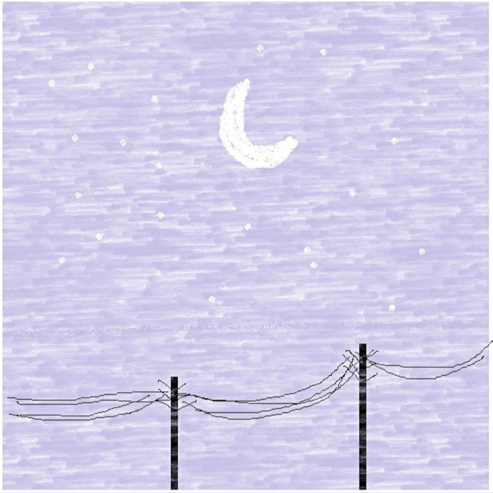

Arini 소개
Arini는 대한민국의 정통 싱어송라이터로서, 좋아하는 아티스트는 최유리, 권진아, 선우정아라고 TikTok 라이브 방송에서 답하였습니다. 언급한 아티스트들처럼 전반적인 음악 작사, 작곡 등 모든 작업을 거의 혼자서 작업한다고 하였습니다.
음악의 모든 영감은 본인의 경험담에서 나왔다고 Threads에서 말한 적이 있으며, 강아지를 무지 좋아하는 편입니다. 아리니의 인스타그램 스토리에 가끔 복순이의 사진이 올라오고는 합니다.
음악을 18살에 시작하였지만 본격적으로 음반을 내기 시작한 건 2024년입니다.

내게로 영원히

보금자리

terapia

brain store

금요일에 만나요